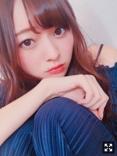
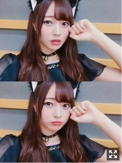
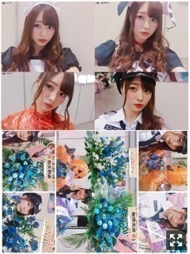
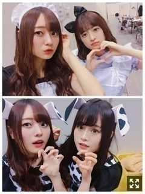
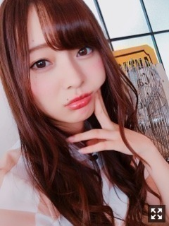

曇った窓ガラスに文字を書いてみたりしたんだ〜。梅澤美波
みなさまこんばんは！！
乃木坂46 ３期生の
梅澤美波です！！

まるまった
この間、久保梅で見殺し姫お礼配信ありがとうございました！とても急遽だったのに見てくれたのありがとうね、☺︎
喋り尽くしたなあ〜（笑）
この前ね、
ももことかえでとたまみとお泊まりして
朝起きて午前中からキムチ鍋とチーズフォンデュした☺︎（笑）
そのあと４人でお仕事へ向かった☺︎（笑）
仲良しかよ〜（笑）
いや〜たのしかったな〜すきだな〜
T-SPOOK！！
まさかの大雨、、
いくら晴れ女で、撮影時は雨が降っていても後半絶対晴れにできる私でも
この天気にはかなわなかった、、
雨の中ありがとうございました(；＿；)
みんな風邪引いてない？大丈夫？( .. )
ステージから見ててめちゃくちゃみんなびしょびしょで、もはやかっぱから頭出してる人の方が多くて心配だった、、
雨だしサイリウムきっと壊れちゃうからないのかな〜とか思ってたらたくさん！！
水色×青色サイリウムめちゃくちゃ見つけたよ！！タオルも！本当にありがとう(；＿；)

にゃ〜。
わたしを飼いたいなら 毎晩ふかふかのベッドで寝かせてにゃん。
と自己紹介しましたにゃん。
（笑）
きっとわがままだけど飼ってくれる〜？（笑）
犬か猫どっちがいいか聞かれたけど
３期生のことだから
取り合いになる気がして（笑）
どっちでもいいよ〜
と答えたら黒猫でした◎（笑）
でもみんなに、
｢みなみは絶対猫だよ〜ドSな猫っぽい（笑）｣
と言われたのでこっちで良かった（笑）
みんなかわいくて仕方なかったな〜本当に
癒しだったな〜
れんかはみなみのダルメシアン、
たまみはみなみのチワワ、
ももこはみなみの柴犬、
ペットが沢山いて困るわあ〜( ¨̮ )
そしてそして
この１２日間の間に
ラジオふたつも出演させていただいてきました！
新内眞衣さんのオールナイトニッポン０！
新内さんの声とか話し方が好きで
このラジオは良く聴かせていただいていて
まさかの
出演させていただくことに、、
いつか出たいと思っていたから
物凄く嬉しくって楽しくって、、
新内さんが話しやすい雰囲気を出してくださるので良い意味で気を貼りすぎずリラックスしてお話できました☺︎
黒歴史のお話はなんだか新内さんと気が合いすぎてとても楽しかったし話足りなかったな〜（笑）
新内さんはいつも優しいオーラを放ってくださるから
新内さんを見つけるとついつい絡みに行ってしまう( .. )
おねえさま☺︎
深夜だからテンションも上がっていたけど
毎週この時間に生でラジオ番組をしていらっしゃる新内さんは本当にすごいなあと改めて思いました、また出たいなあ( .. )
そして、沈黙の金曜日！
こちらもよく聴かせていただくラジオ！
面白くて好き！
まさかのゲストとして出演させていただいてきました！
嬉しくってラジオが立て続けだったこともあり決まった時は騒ぎました☺︎（笑）
真夏さんがアシスタントMCをされていたのですが、たくさん助けていただきました(；＿；)
いつも本当に優しいから楽しめた☺︎☺︎
アルコ&ピースさんも本当に優しい方で
面白くって、
何より３期生のことを詳しく分かってくださっていることに感動しました、、( .. )
お話しやすくてとっても楽しかった〜
今度は中田さんがいる時に
またお呼ばれしたいなあ( .. )( .. )
(雨の中来てくれた皆様も、本当にありがとうね☺︎☺︎
ラジオ好きだなあと再認識！
もっと出られるよう頑張ります！
ほんで昨日の握手会〜！！
しばらく無かったから
ずっと楽しみにしてた！
見殺し姫の感想も沢山ありがとう☺︎
たまみの生誕祭では
お手紙を読ませていただきました☺︎☺︎
かわいいかわいいたまみに書けて嬉しかったなあ。
もうすぐ16歳かあ( ¨̮ )

１部：メイド
２部：T-SPOOKの衣装わんちゃんVer.
３部：チャイナ赤(でんとお揃い)
５部：ポリス
でした〜◎
来てくださった方どうでしたか！！
あなたはどれがお好きですか〜☺︎
メイドとかだいぶ頑張った（笑）
本当にがんばった（笑）
もう二度とないかも（笑）
恥ずかしかったなあ〜
お花もありがとうございました( .. )
とても綺麗で可愛くて
毎度感動します( .. )
素敵な贈り物をありがとうね。☺︎
イベント事って楽しくていいよね〜
いつもならできない格好も
魔法がかかったみたく出来ちゃう
ハロウィン、楽しい！
素敵だなあと思った☺︎☺︎

質問コーナー◎
Q.１回覚えた人の顔って覚えてる？
A.覚えてる！１回覚えればほとんど忘れないと思う！名前は別だけど( .. )顔は覚えるの早い！
――
Q.コスメとファッションで集めてしまうものは？
A.リップ！！黒のアイテム！！
――
Q.最近よく聴く曲は？
A.Shuta Sueyoshiさんの「秒針 Re:time」をずっとリピートしてます！Aimerさんの「ONE」とか米津玄師さんの「灰色と青(+菅田将暉さん)」とか！！☺︎
――
Q.高校時代はどんな生活送ってた？
A.学校終わってバイトして、バイトない日は友達とご飯に行ったり、家でダラダラしたり、そんな高校生でしたよ☺︎
――
Q何鍋がすき？？
A.キムチ！！シメのチーズリゾットがすごいすきなの( .. )あとはミルフィーユ鍋すき！冬は鍋したくなるよね〜☺︎
告知◉
▽１０／２３ CanCam さま
もう発売しております！
毎月かかさず読んでいる雑誌。大好きな雑誌。
読んでいただけて光栄でした。
ファッションメイクが大好きだと改めて！
メイクページなのですが、私のメイクは３人とはちょっと違った、珍しいカラーを貴重としたアイメイクでした！新鮮！
アイドルモードな私とは違った1面が見られるかと！また呼んでいただけるように頑張ります！
今月号の松村さんもとっても可愛いです(；＿；)松村さんにお会いした時、いつもと雰囲気違くて綺麗だったよ〜って言っていただけて本当に嬉しかった(；＿；)皆様ぜひ！
▽１１／２２ アップトゥボーイ さま
３号連続乃木坂46特集の３期生代表の１人として選んでいただきました！
私が初めてソログラビアをさせていただいた思い入れの強い雑誌です。
アップトゥボーイさまの
ソログラビアは半年ぶり。嬉しかったなあ。
撮影していて、私のことを物凄く考えて撮影の企画を考えて下さったのだと、愛を感じました。( .. )
本当に楽しくて仕方なかった、、
今までとは全く違う表情をした私が見られます。絶対、見てほしい！男性の方はもちろん、女のコにも！
表紙、巻頭グラビアに美月、巻中に葉月と私が出させていただいています！葉月の初ソログラビアだよ！お願いみてね！３期生では３人☺︎嬉しい☺︎
早くオフショット載せたいな〜
かわいいかわいいれんたんを
しゃぶしゃぶへ連れていきます、☺︎
思いっ切りつねりたくなるくらいかわいい( ¨̮ )（笑）
ああ
じゅんなさんの舞台楽しみだなあ
わくわく☺︎☺︎
先輩方の背中が
もっともっと大きく見えるんだろうなあって
いつも大きすぎる背中を見せてくださるけど
きっとより感じることになるだろうなって
３期生も私自身も
大きく成長できる期間だと思います
必死に追いかけたいです、
３期生は３期生で
やるべきパフォーマンスがあって
私は私でファンの方にどう魅せるか
そんなことを考えながら挑みたいなって！
会場は物凄く大きいだろうから
私のパフォーマンスに目がつくように
大きい身長を精一杯使って
ファン方にも、そうでない方にも
私を見つけてもらえたらなって。☺︎
がんばります！

おやすみね〜みんな！！
よく眠るんだよ！！！
今週末の京都握手会来られる方は
よろしくね☺︎☺︎
楽しんだら勝ちだなあと思う！
簡単なことばかりではなかったりするけど、楽しいと思えばなんだかんだ乗り越えられちゃう気がしてる☺︎
寿命があるお仕事だからこそ楽しみたい！
今週も一緒にがんばろな☺︎
Original：https://www.nogizaka46.com/s/n46/diary/detail/41633?ima=0519&cd=MEMBER